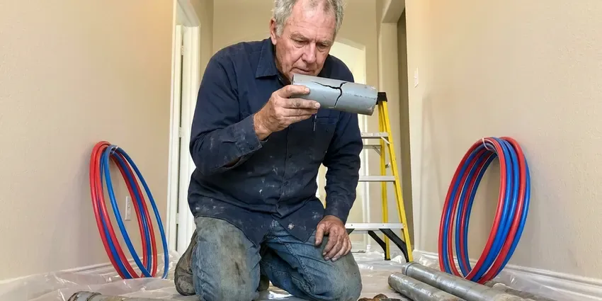

Basement Leak Repair in Burlington, VT
CKV Plumbing repairs basement leaks in Burlington, VT, from cracked drain pipes to wall seepage.
- Same-Day Leak Detection
- Moisture Meter & Camera Testing
- Precise Leak Detection
- Long-Lasting Repairs

Fix the Leak: Basement Leak Repair in Burlington, VT.
We test first, so you only pay for the repair that fixes it.
Basement Leak Repair for Burlington, VT Homeowners
CKV Plumbing gives Burlington homeowners a straight answer on the water source before any repair starts. The usual suspects are the water heater, an old cast iron stack, a stuck sump float and wall cracks. Most are one-visit fixes.
Our expertise includes:
- Wall crack sealing with polyurethane or epoxy
- Moisture meter and thermal camera leak detection
- Foundation crack injection repair

Additional Plumbing Maintenance Services in Burlington, VT
Our maintenance and specialty plumbing services in Burlington, VT catch small problems before they become emergencies.


Customers
Why Choose CKV Plumbing for Basement Leak Repair in Burlington, VT?
Choosing who fixes a basement leak comes down to whether they test before they quote. A waterproofing company may sell you a perimeter drain when the real problem is a leaking supply line in the wall, and a plumber who never looks outside may miss a downspout dumping water at the foundation. We check both. Then we tell you which one it is.
- Code Compliance, Repairs meet local code, with inspections scheduled when needed.
- Local Knowledge, We know the soil and foundation types common around Burlington and their usual weak spots.
- Long-Term Fixes, Repairs are built for Vermont weather, including heavy rain and wet soil.
Citywide Coverage
Commercial lower levels around Burlington, such as shop storage rooms and office archives, get the same testing. Early or late visits are available. A grease line or a roof drain leader running through a basement can leak for months before anyone notices, so we trace those along with the domestic water piping.
Experienced Team
Thermal cameras and acoustic listening gear ride on every truck, along with a drain camera. Training on them is ongoing. The tools only help if the person reading them knows what a cold water line looks like on a thermal image versus a wet spot in the drywall, and that takes practice.
Safety-First Approach
Standing water near an outlet or a furnace can be a shock hazard. Our tech checks for live power before entering the water. Power gets shut off at the main if water reaches outlets or the panel, and gas appliances that got wet are checked before restarting.
Trusted Certified Burlington Plumbing Services Professionals
At CKV Plumbing, we are proud to offer certified plumbing services throughout Burlington, VT. Credentials matter in this trade. Every repair, install and maintenance visit follows strict safety and quality rules, and the plumbers doing the work carry recognized industry credentials.
Call Us Now PHCC Plumbing Contractor Recognition
PHCC Plumbing Contractor Recognition Better Business Bureau (BBB) Accreditation
Better Business Bureau (BBB) Accreditation Angi Certified Pro
Angi Certified Pro ISO 9001 Quality Management Certification
ISO 9001 Quality Management CertificationReliable Basement Leak Repair in Burlington, VT
Waterproofing for Older Vermont Homes in Burlington, VT
Older basements were often built with block walls and no exterior membrane. Renovations in Burlington frequently mix original plumbing with newer copper or PEX, so a thorough look at transitions and fittings is important. Water collects inside hollow block cores, and weep holes at the base let it drain into a perimeter channel. Clay tile drains fail too.

Interior Drainage Systems in Burlington
Where digging outside is not practical, an interior drain system does the same job from inside. A strip of slab comes out along the walls, perforated pipe goes in on stone, and it all drains to a sump. The wall gets a dimpled membrane. Water then runs behind it into the channel.
Wall and Slab Seepage Repair in Burlington
Seepage at the wall or the slab joint is usually surface water pooling against the foundation. Clay soils in river valleys drain poorly and can hold water against foundations, so sump systems are common in low-lying homes. We look at gutters and grading first, since fixing them outside often stops the seepage for far less money. We always try the cheap fixes first.
Crack Injection for Basements in Burlington
Injection works on poured concrete walls, not block. Ports go along the crack, the face gets sealed, and resin goes in from the bottom up until it fills the full depth. Epoxy adds strength. Polyurethane is better for active leaks because it foams on contact with water.
Foundation Crack Repair in Burlington
Hairline cracks in a poured wall are normal and usually dry, but a crack that seeps after rain needs attention. Clay soils in river valleys drain poorly and can hold water against foundations, so sump systems are common in low-lying homes. We inject leaking cracks from the inside with polyurethane foam, which expands into the crack and stays flexible as the wall moves. Most injections take an hour or two.
Drain and Sewer Pipe Leak Repair in Burlington, VT
Cast iron drain stacks in older homes rust through from the inside over decades. A wet spot at the base of the stack or a crack along the hub is common, and we replace the damaged section with PVC or new cast iron joined with no-hub couplings. Plastic joints can fail too. A separated PVC joint usually means the pipe was not fully seated or not supported.
Sump Pump Repair and Installation in Burlington, VT
Plenty of basements rely on a sump pit to handle runoff and groundwater. Spring snowmelt and heavy rain can quickly swell rivers in Vermont, and many basements take on water during the wet season. Pumps from big-box stores often last five to seven years, and the first sign of trouble is usually a pump that runs constantly or hums without moving water. We replace pumps the same day.

Basement Leak Repair Cost Comparison in Burlington, VT
A simple fitting or supply line repair usually costs $200 to $600. Drain stack repairs run $500 to $2,000 depending on access. A new sump pit and pump runs $1,200 to $2,500, while interior perimeter drains and exterior waterproofing cost several thousand dollars more because of the concrete work and digging involved. Prices vary with access.
Basement Leak Repair Near Me in Burlington, VT
Local knowledge includes how the soil and storms around Burlington affect lower levels. Clay soils in river valleys drain poorly and can hold water against foundations, so sump systems are common in low-lying homes. That tells us whether a wet wall is likely a drainage issue or a plumbing one before we even unpack the meter, and where to look first along the foundation. Testing still confirms it.
A plumber near your Burlington, VT home can come back quickly for a follow-up check after the next heavy rain. We care about that follow-up. A seepage fix is only proven in a real rain, so we come back after the first storm to recheck it.
CKV Plumbing at a Glance
- Fully licensed plumbing team covering Burlington, VT
- Same-day appointments and 24/7 emergency response
- Clear written estimates, no hidden fees
- 4.8-star rated by 553+ Vermont customers
Burlington Map
Burlington Information
- Population
- 44,528
- Area codes
- 802/860/603
- Service area
- Burlington and communities within 40 miles
- Nearby
- Winooski, South Burlington, Essex Junction, Shelburne
Basements in Burlington, VT get wet when heavy rain saturates the soil. Spring snowmelt and heavy rain can quickly swell rivers in Vermont, and many basements take on water during the wet season. Drainage and a working sump keep it outside.
Expert Services
Call CKV Plumbing for reliable plumbing work done by licensed pros in Burlington, VT.
Our Specialized Plumbing Services in Burlington, VT
At CKV Plumbing, you get every kind of plumbing service from one company across Burlington, VT. We go from leak detection all the way to full system installations, for homes and commercial buildings, and we do it quickly at a fair price. Explore our core services below:


How Our Basement Leak Repair Process Works in Burlington, VT
Every basement leak job starts with testing, so you pay for the fix that works.
Request a Quote
Call (802) 209-5139 and describe where you see water and when it appears. We often schedule the same day.
Trace the Source
Our technician uses meters and dye or pressure tests to isolate the leak.
Repair and Verify
We make the repair, then retest under real use. You get a written summary.
Frequently Asked Questions About Basement Leak Repair in Burlington
Most wet basement repairs fall between $500 and $5,000, and the spread comes from what is causing the water. Regrading or extending downspouts is at the low end. Interior drain systems run more because the slab has to be cut along the walls, and exterior waterproofing costs the most because the soil has to be dug out down to the footing. We give a written price first.
Plumbing leaks show up no matter the weather. Groundwater leaks track the rain. Turn off every fixture and watch the water meter, and if it still moves, the leak is in the pressurized lines, while water that only appears a few hours after a storm is almost always coming from outside.
Yes, labor is covered by our workmanship warranty and parts by the manufacturer. Pumps typically carry several years. Model and serial numbers stay on file with us, so a warranty claim does not require hunting for receipts.
Heavy storms dump a lot of water quickly, and the soil around the foundation cannot absorb it fast enough. Spring snowmelt and heavy rain can quickly swell rivers in Vermont, and many basements take on water during the wet season. Once the ground is soaked, water pushes in at the cove joint. Dry months hide it.
A pipe or fitting repair usually takes an hour or two. Injecting a crack is a half-day job. Sump pit installation takes most of a day, and an interior perimeter drain system takes two to five days depending on wall length and how much finished space has to be cleared first.
Look for damp spots on walls or floors, a musty smell, and white chalky deposits on concrete. That white crust is mineral left after water dries. Peeling paint low on the wall, rust on the water heater base, and a water bill that keeps creeping up with no change in use all point toward a leak worth testing. Smell often comes first.
Simple pipe repairs and crack injection usually do not need a permit. Larger work is a different story. Replacing a drain stack, installing a new sump with a discharge line, adding a backwater valve, or excavating near the foundation may require a permit, and we pull it when it is needed.
Start outside. Clean gutters and push downspout discharge six feet or more from the wall. Grade the soil away from the house, test the sump with a bucket each spring, and insulate sweating cold lines. Check the water heater yearly.
What Our Customers Say About Our Plumbing Experts

Lisa C.
Water was pouring out from under the washing machine on a holiday weekend. CKV Plumbing talked me through closing the valves over the phone and had a plumber at the house within ninety minutes. It was a burst fill hose.
Emergency Plumbing · St. Albans, VT
Jessica T.
We were adding a gas range in a kitchen remodel and needed a new line run from the meter. The plumber pulled the permit, ran the pipe through the crawl space, and had it inspected and approved within the week.
Gas Line Repair · Middlebury, VTRachel N.
Hard water was leaving white crust on every faucet and our dishwasher was struggling. The tech tested the water, recommended a softener sized for a family of five, and installed it with a bypass valve in one afternoon. The spots on our glasses are gone.
Water Softener · Shelburne, VT
Robert G.
The camera showed a full break in our clay sewer line near the street. CKV Plumbing replaced it with a trenchless pipe burst, so the only digging was two small pits in the yard. They let us watch the footage before and after.
Sewer Line Replacement · South Burlington, VT
Mark T.
The floor drain in our office break room backed up every few weeks. The plumber ran a cable, then put a camera down and found roots at a joint about thirty feet out. Seeing it on the screen made the decision easy.
Drain Cleaning · St. Albans, VTSofia M.
Two new toilets went in during one visit. The tech set them on new wax rings and swapped the old supply lines. He also noticed our bathroom faucet dripping and replaced the cartridge while he was there. No mess left behind.
Toilet Installation · Shelburne, VT